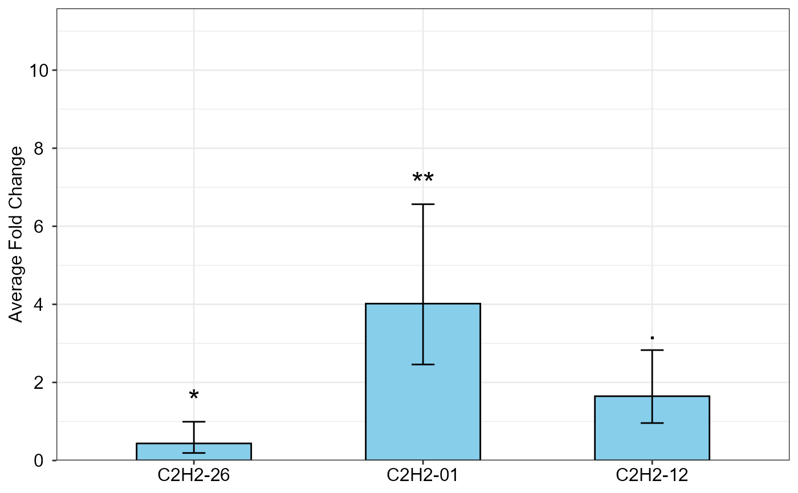
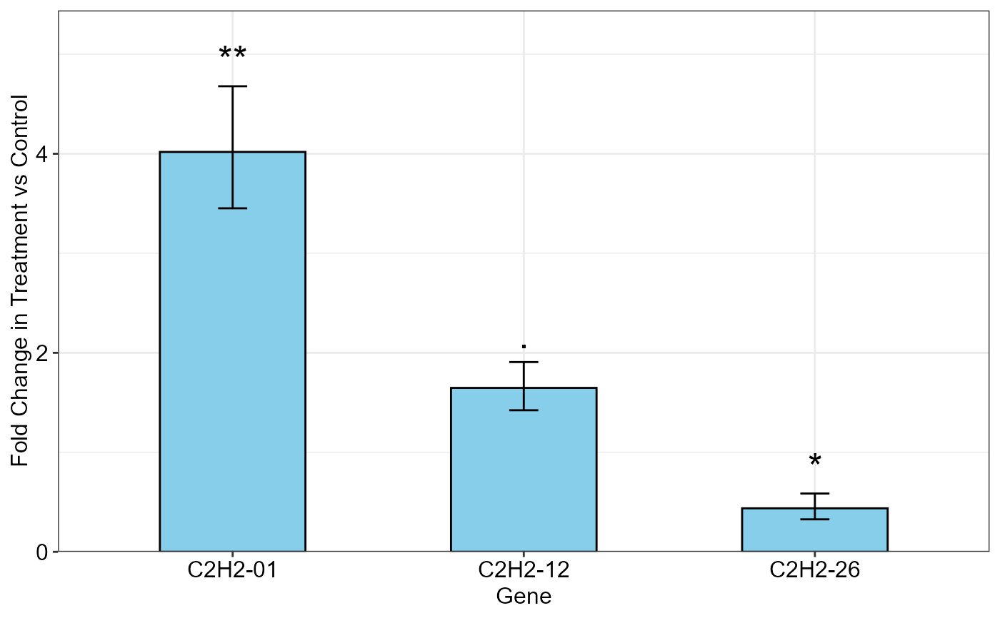

R/qpcrTTESTplot.r
qpcrTTESTplot.RdBar plot of the fold change (\(\Delta \Delta C_T\) method) values for for any number of target genes under a two-level conditional experimental (e.g. control and treatment).
qpcrTTESTplot(
x,
order = "none",
numberOfrefGenes,
paired = FALSE,
var.equal = TRUE,
width = 0.5,
fill = "skyblue",
y.axis.adjust = 0,
y.axis.by = 2,
letter.position.adjust = 0.3,
ylab = "Average Fold Change",
xlab = "none",
fontsize = 12,
fontsizePvalue = 7,
axis.text.x.angle = 0,
axis.text.x.hjust = 0.5,
errorbar = "se"
)a data frame. The data frame consists of 4 columns belonging to condition levels,
E (efficiency), genes and Ct values, respectively. Each Ct in the following data frame is
the mean of technical replicates. Complete amplification efficiencies of 2 is assumed here
for all wells but the calculated efficienies can be used we well. We use this data set for
fold change expression analysis of the target genes in treatment condition compared to
normal condition. See vignette for details.
a vector determining genes order on the output graph.
number of reference genes. Up to two reference genes can be handled.
a logical indicating whether you want a paired t-test.
a logical variable indicating whether to treat the two variances as being equal. If TRUE then the pooled variance is used to estimate the variance otherwise the Welch (or Satterthwaite) approximation to the degrees of freedom is used.
a positive number determining bar width.
specify the fill color for the columns of the bar plot.
a negative or positive value for reducing or increasing the length of the y axis.
determines y axis step length
adjust the distance between the signs and the error bars.
the title of the y axis
the title of the x axis
fonts size of the plot
font size of the pvalue labels
angle of x axis text
horizontal justification of x axis text
Type of error bar, can be se or ci.
Bar plot of the average fold change for target genes along with the significance and the 95 percent CI as error bars.
The qpcrTTESTplot function applies a t.test based analysis to any number of target genes
along with one or two reference gene(s), that have been evaluated under control and treatment conditions.
It returns the bar plot of the fold change (FC) values for target genes along with the 95% CI and significance.
Sampling may be unpaired or paired. Unpaired and paired samples are commonly analyzed using unpaired and
paired t-test, respectively.Paired samples in quantitative PCR refer to two sample data that are collected
from one set of individuals
at two different conditions, for example before and after a treatment or at two different time points. While
for unpaired samples, two sets of individuals are used: one under untreated and the other set under treated
condition. Paired samples allow to compare gene expression changes within the same individual, reducing
inter-individual variability.
# See a sample data frame
data_ttest
#> Condition Gene E Ct
#> 1 control C2H2-26 2 31.26
#> 2 control C2H2-26 2 31.01
#> 3 control C2H2-26 2 30.97
#> 4 treatment C2H2-26 2 32.65
#> 5 treatment C2H2-26 2 32.03
#> 6 treatment C2H2-26 2 32.40
#> 7 control C2H2-01 2 31.06
#> 8 control C2H2-01 2 30.41
#> 9 control C2H2-01 2 30.97
#> 10 treatment C2H2-01 2 28.85
#> 11 treatment C2H2-01 2 28.93
#> 12 treatment C2H2-01 2 28.90
#> 13 control C2H2-12 2 28.50
#> 14 control C2H2-12 2 28.40
#> 15 control C2H2-12 2 28.80
#> 16 treatment C2H2-12 2 27.90
#> 17 treatment C2H2-12 2 28.00
#> 18 treatment C2H2-12 2 27.90
#> 19 control ref 2 28.87
#> 20 control ref 2 28.42
#> 21 control ref 2 28.53
#> 22 treatment ref 2 28.31
#> 23 treatment ref 2 29.14
#> 24 treatment ref 2 28.63
qpcrTTESTplot(data_ttest,
numberOfrefGenes = 1,
errorbar = "ci")
#> $plot

#>
# Producing the plot
qpcrTTESTplot(data_ttest,
numberOfrefGenes = 1,
order = c("C2H2-01", "C2H2-12", "C2H2-26"),
paired = FALSE,
var.equal = TRUE,
width = 0.5,
fill = "skyblue",
y.axis.adjust = 0,
y.axis.by = 2,
letter.position.adjust = 0.3,
ylab = "Fold Change in Treatment vs Control",
xlab = "Gene",
errorbar = "se")
#> $plot

#>